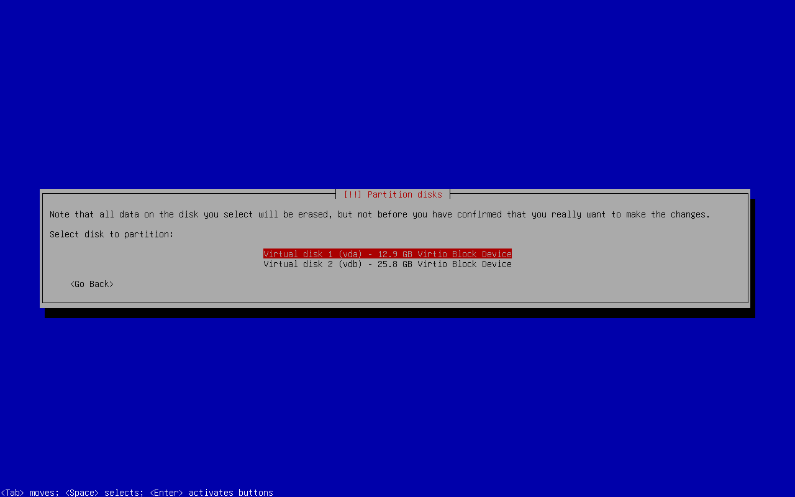

User guide
A practical guide to trying, installing and using the Debian 13 Openbox setup. ErdOS 1 Alpha 2 is an experimental amd64 release; start in a VM and keep backups before installing on real disks.
Try the live desktop
- Download the ISO and checksum from GitHub Releases and verify the download.
- Attach the ISO to a VM, or use an image writer to write it to a USB device. Writing an image erases that USB device; copying the ISO file onto a formatted drive is not the same operation. Debian documents USB installation media.
- Use a 64-bit Intel/AMD system and disable Secure Boot. Choose Try ErdOS in the boot menu.
- At the console, log in as
userwith passwordlive. Openbox starts automatically on tty1.
The public live account has sudo access. There is no SSH server, graphical login manager or configured persistence. Live-session changes disappear on reboot. Other virtual consoles stay in text mode.
Choose Logout in the right-click menu to end the graphical session and return to a fresh login prompt. Log in again to start Openbox.
Verify a download
Put the ISO and erdos-amd64.iso.sha256 from the same release in one directory, then run:
sha256sum -c erdos-amd64.iso.sha256The result should say erdos-amd64.iso: OK. If it fails, do not boot that copy; check that the files came from the same release and download again. SHA256SUMS verifies all uploaded release assets when they are present together.
A checksum detects changed bytes. An unsigned checksum does not prove a publisher’s identity.
Install to disk
Installation starts from Install ErdOS (offline) in the ISO’s boot menu. Reboot out of the live desktop to select it. The official Debian text installer copies the configured desktop and sets up accounts and GRUB.
Choose language, keyboard, timezone, account details and partitioning. Installation runs entirely from the USB without Ethernet-driver, Wi-Fi, DHCP, NTP or mirror-download questions. Available firmware is retained for the installed desktop. Internet access is not needed to install; connect after the first boot. Specialized hardware may still need additional drivers.
Your first installed account gets sudo access using its own password. There is no separate root-password question, package-selection screen or mirror-country/server/proxy selection. BIOS bootloader destination selection remains manual.
Replace the entire disk
- Back up anything you need from the destination disk.
- Choose Guided — use entire disk.
- Select the intended disk by its model and capacity. Check carefully when several disks or USB devices are connected.
- Choose a partition layout and review the resulting plan.
- Approve the final Write the changes to disks? prompt only when the listed disk and partitions are correct.
Whole-disk installation erases the selected disk when you confirm. Disk selection and the final erase/write approval stay manual.

Install alongside another OS
- Back up the existing system. In that OS’s disk-management tools, shrink its partition and leave at least 20 GB of unallocated space. Free space inside its filesystem is not enough.
- Boot the ErdOS USB in the same BIOS/UEFI mode as the existing OS.
- Choose Guided — use the largest continuous free space. If unavailable, stop and prepare sufficient unallocated space first.
- Check that only new Linux partitions will be formatted. Preserve the existing OS partitions and, on UEFI systems, its EFI System Partition.
- Review the plan and the final write confirmation before approving.
Do not choose whole-disk partitioning for an alongside installation. GRUB can detect another OS, but encrypted systems, Windows/macOS and unusual firmware may require additional boot configuration; those setups have not been tested by this project.

First boot
Remove the ISO/USB when installation finishes, boot the installed system and log in with the account you created. Openbox starts on tty1. Connect to Wi-Fi using Settings → Network. Test administrative access with sudo -v, entering your normal account password, then run sudo apt update.
APT is already configured for Debian Trixie, updates, security and non-free firmware. No manual mirror setup or source-file editing is needed. Live and installed sessions share signed HTTPS repositories. Automatic clock synchronization starts when a time server is reachable. The installer writes repository settings locally; the first apt update downloads their indexes after you connect.
An installed system boots automatically after a one-second hidden menu timeout. Press Esc during startup to open the boot menu for recovery or another OS. Local login clears old console output; Logout returns to the login prompt.
Desktop and applications
Right-click the desktop for Terminal, Web Browser, File Manager and Text Editor. These use your selected defaults; initially Sakura, regular Firefox, PCManFM and Twig. The Applications submenu reads installed desktop entries when opened, so added or removed graphical applications appear without a polling daemon or APT hook. Command-line tools need a desktop entry to show there.
The desktop has no panel or tray. Use Super+Space or the Menu key for the Openbox menu, Super alone or Super+O for windows, and Super+Shift+O for workspaces. Settings provides sound, network, battery and time controls. Openbox briefly shows its own popup when switching workspaces.
- Audio: open Settings → Sound to choose output/input devices, adjust volume or mute. Supported volume and mute keys also work.
- Networking: open Settings → Network to enable Wi-Fi, refresh networks, connect or manage saved connections. Advanced profiles are available through Network Connections in Applications.
- Bluetooth: open Settings → Bluetooth to scan, pair and connect devices.
- Battery: open Settings → Power for charge, charging status and hardware-reported health.
- Clock: open Settings → Date & Time for the current time, time zone and automatic synchronization status.
- Files: PCManFM handles USB mounting and network shares. Open
smb://server/sharefor SMB; automatic Windows WS-Discovery browsing is not guaranteed. SFTP uses the SSH client. - Text: Twig opens plain text and common source files by default. Mounted shares are exposed through GVfs FUSE for editor access.
- Touchpad: natural scrolling, two-finger scrolling and two-finger right-click are enabled on supported devices.
Network passwords are requested when needed; there is no bundled desktop keyring. Most manuals, package documentation and non-English translations are trimmed. Package copyright notices remain.
The bottom of the right-click menu contains Logout, Reboot and Power off. Logout ends both X and the tty1 login session.
Disk and memory usage
The November 19, 2026 image used approximately 1.80 GiB installed and 380.6 MiB of RAM at idle in this VM measurement. These are observed usage figures, not minimum hardware requirements.
A fresh UEFI installation on a 24 GiB virtual disk, with two virtual CPUs, 2 GiB of RAM, and a 1280 × 800 display. The ISO was removed before booting the installed system. No packages were added, removed or upgraded, and no APT indexes were downloaded.
Disk usage counts used filesystem blocks on the ext4 root and FAT EFI filesystems, including their metadata. It excludes unused space and the separate 1.25 GiB swap partition created by guided partitioning. 1,936,224,256 bytes were used on root and 311,296 bytes on EFI: 1,936,535,552 bytes total.
RAM is MemTotal − MemAvailable from /proc/meminfo, which accounts for reclaimable memory. The figure is the median of five samples taken ten seconds apart after letting the normal desktop settle for two minutes. The panel-free desktop, file-manager daemon, gesture/workspace listener, audio, NetworkManager and time-sync service ran normally; no application windows were open. The serial console shell, Python sampler and read-only test-fixture mount are included in the RAM measurement. Swap use was 0 bytes. The VM had no network or Bluetooth adapter; Bluetooth is enabled by default but its service stays inactive without hardware.
Hardware, drivers, updates and opened applications change these numbers. GiB and MiB use powers of 1024. Allow additional space for packages and your files; the installation guide recommends leaving at least 20 GB available.
Settings
Press Super + I or choose Settings in the desktop right-click menu. Appearance, Default Programs, Touchpad, Keyboard, Menu, Gestures, Displays, Sound, Network, Bluetooth, Power and Date & Time share one window. Use the Apply button for the setting you change; connection and pairing actions use their own buttons. Power is an information page.
Change themes, fonts, desktop color; edit shortcuts, add custom application commands and change swipe actions; adjust touchpad behavior, automatic monitor extension, brightness, audio and Wi-Fi. The app reuses Python and GTK already in ErdOS and closes completely when you close its window.
In Alpha 2, Apply results appear in a dismissible message; failures are distinguished from successful changes, and sections that cannot load offer Retry. New users get matching dark applications, window borders and menus without extra theme packages.
Displays lists advertised resolutions with a 15-second Keep/Revert confirmation. Confirmed modes are restored at login for the same outputs. Power shows battery information; Date & Time lets you view the clock, change the system time zone and check automatic time synchronization. Bluetooth supports scanning, pairing, connection and trusted devices. Advanced network profiles use the existing Network Connections app. Controls, persistence and limitations. View Alpha 2 Settings.

| Settings section | Controls |
|---|---|
| Appearance | GTK theme, font, dark preference and desktop color; image backgrounds in Alpha 2 |
| Default Programs | Terminal, browser, file manager and text editor |
| Touchpad | Scrolling direction, tap to click, two-finger right-click and pointer speed |
| Keyboard | Workspaces, Super-only overview, existing shortcuts and custom commands |
| Menu | Add, edit, delete and reorder right-click menu entries |
| Gestures | Swipe distance and actions |
| Displays | Resolution, automatic monitor extension and laptop brightness |
| Sound | Output/input devices, volume and mute |
| Network | Current Wi-Fi/internet state, radio on/off, scan, connect and disconnect (improved) |
| Bluetooth | Adapter power, scan, pair, connect, trust and forget |
| Power | Battery and external-power information; no sleep-policy controls |
| Date & Time | Current time, time zone and automatic synchronization |
Default programs
Use Settings → Default Programs. Install an alternative, refresh the application list, choose it and click Apply default programs. The root menu and Super+Enter, Super+B, Super+E and Super+T use these choices immediately. Applications still lists actual app names.
Browser, folder and plain-text choices share the normal desktop associations, so a default browser chosen elsewhere is honored too. Terminal selection is per user, with the system terminal as fallback. Other file types retain their own associations. Details. Alpha 2 includes these defaults, the Network feedback improvements and regular Firefox.
Background images
Choose an image or a solid color in Settings → Appearance.
In Settings → Appearance, choose Background → Image, select a file and choose Fill, Fit, Center or Tile. Apply appearance saves the selection. Fill crops without stretching; Fit keeps the whole image and uses Desktop color around it.
Remove image switches back to Solid color when applied and deletes only the private wallpaper copy, leaving the original file untouched. Images are copied into your user configuration, restored at login and refreshed after display changes. Missing or unreadable saved images fall back to the solid color. This uses the existing hsetroot package, with no additional daemon.
Keyboard shortcuts
Super is usually the Windows key. The number-row workspace bindings use physical X11 keycodes. Keypad tiling supports either NumLock state.
| Shortcut | Action |
|---|---|
| Super + Enter / Ctrl + Alt + T | Open the default terminal (Sakura initially) |
| Super + B | Open the default web browser (Firefox initially) |
| Super + E | Open the default file manager (PCManFM initially) |
| Super + I | Open ErdOS Settings |
| Super + T | Open the default text editor (Twig initially) |
| Super + Q / Alt + F4 | Close focused window |
| Super + H | Minimize |
| Super alone / Super + O / Escape | Open / dismiss the window overview |
| Super + Shift + O | Workspace overview |
| Super + Space / Menu | Openbox menu |
| Ctrl + Super + Left / Right | Cycle windows directly (gesture fallback) |
| Super + Tab / Shift + Super + Tab | Cycle windows forward / backward |
| Shift + Super + top-row 1–9 | Switch an existing workspace |
| Super + F1–F9 | Alternative workspace switching |
| Ctrl + Shift + Super + top-row 1–9 | Move a window to that workspace without following |
| Super + Left / Right | Tile left / right half |
| Super + Up / Super + M | Maximize |
| Super + Down | Restore original size and position after tiling/maximizing |
| Super + numpad 4 / 6 / 8 / 2 | Tile left / right / top / bottom half |
| Super + numpad 7 / 9 / 1 / 3 | Tile top-left / top-right / bottom-left / bottom-right quarter |
| Super + numpad 5 | Maximize |
| Alt + left-drag / right-drag | Move / resize a window |
| Print Screen | Save full desktop screenshot |
| Alt + Print Screen | Save active-window screenshot |
| Shift + Print Screen | Select an area for a screenshot |
Screenshots save silently to ~/Pictures/Screenshots. Repeated tiling and maximization retain a window’s original geometry until restored; restore also keeps the window visible if its former monitor has been unplugged.
Hardware keys
Standard volume, speaker mute and microphone mute keys are bound through PipeWire’s wpctl. Volume steps are 5%, capped at 100%. Screen brightness uses 5% steps and keyboard backlights use 10% steps through brightnessctl, when the hardware provides suitable controls. External-monitor DDC brightness is not included.
Fn/media-key mode is usually controlled by keyboard firmware. In a VM, the host or viewer can intercept keys before ErdOS receives them. Test the viewer’s send-key or keyboard-grab options before changing guest bindings.
Touchpad gestures
On a compatible touchpad, ErdOS uses this swipe layout. A clear swipe triggers once after crossing a deliberate movement threshold, before you lift your fingers. Small movements and ambiguous diagonal swipes are ignored. Windows do not follow your fingers through an animation.
| Swipe | Action |
|---|---|
| 3 fingers up | Show the open-window overview |
| 3 fingers down | Close the overview |
| 3 fingers left / right | Previous / next window on the current workspace |
| 4 fingers left / right | Next / previous workspace, wrapping at the ends |
Dynamic workspaces keep one empty workspace after the last occupied or current one. Switching to that spare creates another. Empty gaps retain their numbers; unused trailing workspaces are removed. The overview includes windows from all workspaces. Select a window with the pointer or arrow keys and Enter; Escape or three fingers down dismisses it. Repeating swipe-up leaves an already open overview visible. Swipe-down does nothing to an ordinary application when the overview is closed.
Skippy-XD starts only when needed, with physics and animations disabled. Unmapped or minimized windows may use an icon/title placeholder rather than a live thumbnail. Super+O opens the overview without a touchpad; Ctrl+Super+Left/Right provides the same direct window cycle used by swipes.
Only touchpad input nodes get active-user access. Keyboard device-node access and input-group membership are not added. The Super-only shortcut observes X11 key events and does not log typed text. The reader pauses for inactive/locked login sessions and exits with X. VMs often expose only a mouse; physical three/four-finger detection depends on the touchpad and how the VM passes it through.
Customize bindings and sensitivity in ~/.config/erdos/gestures.conf, using /etc/erdos/gestures.conf as a starting point. Set an action to none to disable a binding. The old libinput-gestures configuration is no longer used. An action already triggered cannot be undone by changing direction or cancelling the swipe; lift your fingers before the next swipe. Restart with erdos-gesture stop then erdos-gesture session. Diagnostics are in ~/.local/state/erdos/gestures.log and overview.log.
Multiple monitors
At login or a connection change, ErdOS extends external displays to the right and keeps the laptop screen primary. Each output uses a suitable advertised mode. With no internal panel, the helper keeps a connected primary or chooses the first connected screen.
Drag windows across displays; tiling follows the monitor containing the window. Workspaces span all screens, so switching workspaces switches them together.
Automatic layout listens to RandR events, rather than polling. It leaves manual changes alone until the next connection change or login. Settings → Displays lets you select advertised resolutions, with automatic rollback unless confirmed within 15 seconds. Confirmed modes return at login for the same output set; reconnecting a monitor resets the automatic layout to preferred modes. Advanced users can stop the helper with erdos-displays --stop or reapply defaults with erdos-displays --apply.
Physical docks, multi-GPU and mixed-DPI setups still need hardware testing.
Troubleshooting
Print Screen does nothing
First check ~/Pictures/Screenshots: saving is silent. Run command -v scrot and erdos-screenshot in Sakura. An older ISO removed scrot during installation; repair it with sudo apt update followed by sudo apt install scrot. The current image retains it. If the command works but the key does not, check the host/VM key handling.
Sudo says my account is not in the sudoers file
Current installations grant the first account sudo. On an older installation where a separate root password was set, note your login name using whoami, run su -, and enter that root password. As root, run apt-get install sudo and adduser YOUR_LOGIN_NAME sudo. Replace the placeholder with your actual login name. Log out completely and back in before testing sudo -v.
Wi-Fi or another device is missing
ErdOS includes firmware for common hardware, not every device. Identify the hardware and use Debian packages for additional firmware or drivers. An Ethernet connection or supported USB network adapter may help get online. Firmware absent from the ISO cannot be made available merely by hiding installer questions.
Settings shows no battery
The Power tab reports no battery when the kernel exposes none, including most VMs and desktop computers. Physical battery and backlight support depends on the kernel and device firmware.
I need more package documentation or translations
Remove /etc/dpkg/dpkg.cfg.d/01-minimal-docs with sudo, then reinstall the affected packages. Copyright notices are retained even in the minimal image.
For a reproducible bug, include the ISO checksum, boot mode, live/installed status, hardware or VM model and steps in a GitHub issue. Redact private information. Validation and known limitations describe the test coverage.